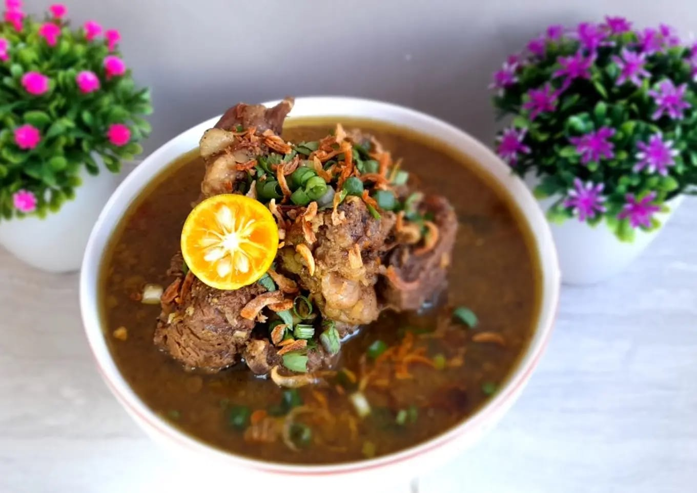

Sop Konro
Sop Konro adalah hidangan khas Sulawesi Selatan yang terbuat dari iga sapi yang dimasak dengan rempah-rempah khas Indonesia. Hidangan ini sangat cocok untuk disantap bersama nasi putih atau ketupat.
Bahan-bahan:
- 1 kg iga sapi
- 2 liter air
- 5 siung bawang putih
- 7 siung bawang merah
- 2 batang serai, memarkan
- 3 lembar daun salam
- 3 butir kemiri, sangrai
- 2 cm jahe, memarkan
- 2 cm lengkuas, memarkan
- 1 sendok makan ketumbar bubuk
- 1 sendok makan merica bubuk
- 1 sendok teh pala bubuk
- 2 sendok makan kecap manis
- Garam dan gula secukupnya
- Minyak untuk menumis
Cara Memasak:
- Rebus iga sapi dengan 2 liter air hingga empuk. Buang busa yang mengapung agar kuah tetap bersih.
- Haluskan bawang putih, bawang merah, kemiri, jahe, dan lengkuas.
- Panaskan minyak, tumis bumbu halus bersama serai, daun salam, ketumbar, merica, dan pala hingga harum.
- Masukkan bumbu yang sudah ditumis ke dalam panci rebusan iga. Aduk rata.
- Tambahkan kecap manis, garam, dan gula sesuai selera. Masak hingga bumbu meresap.
- Angkat dan sajikan Sop Konro dengan taburan bawang goreng dan irisan daun seledri.
Sop Konro sangat nikmat disajikan dalam keadaan panas. Sajikan dengan nasi putih atau ketupat untuk pengalaman makan yang lebih memuaskan.
Tonton Video Tutorial:
Klik link berikut untuk melihat langkah-langkah memasak Sop Konro: Tonton Tutorial Sop Konro
Back to Home